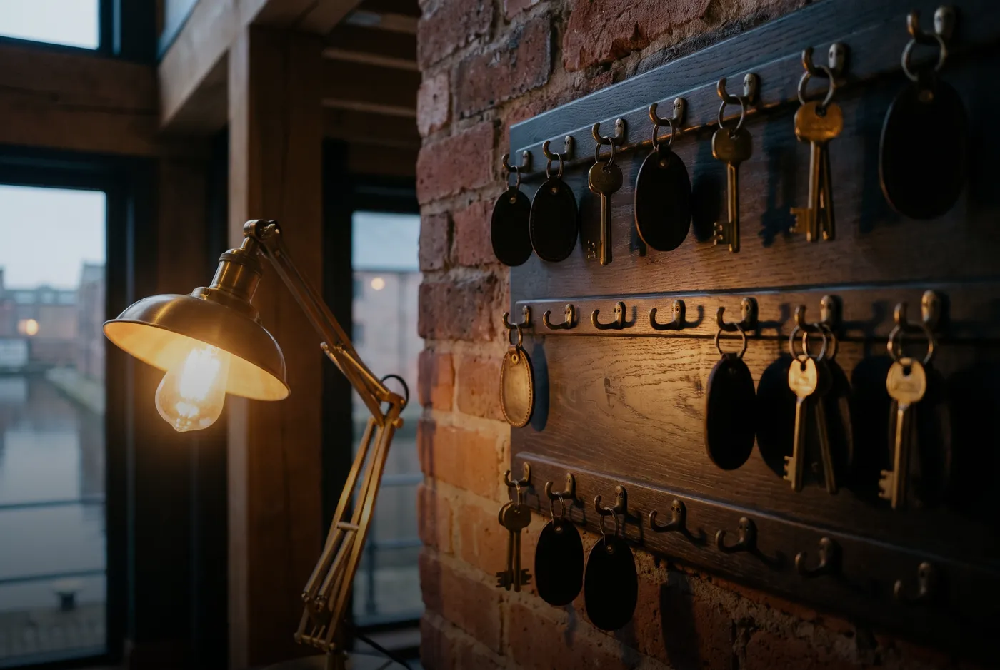
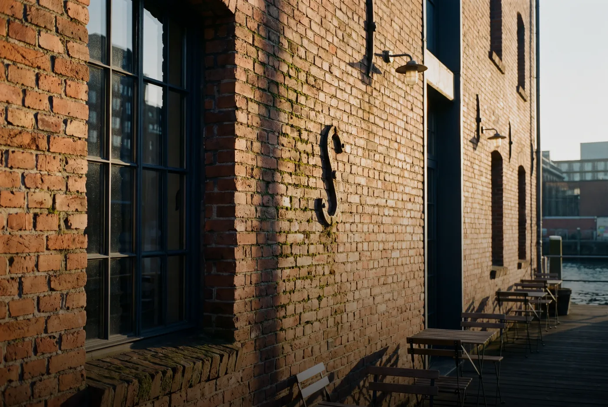
Das Team hinter Tasty Studios
Vorneunddahinter.
Hinter Tasty Studios stehen zwei Gründer aus Hotellerie und Gastronomie. Anna Llorens kommt aus dem Front Office grosser Häuser, Robert Reff aus der Führung von Restaurants. Zusammen bauen wir, was ein Haus heute digital braucht.
Zusammen25Jahre in Hotels
und Restaurants
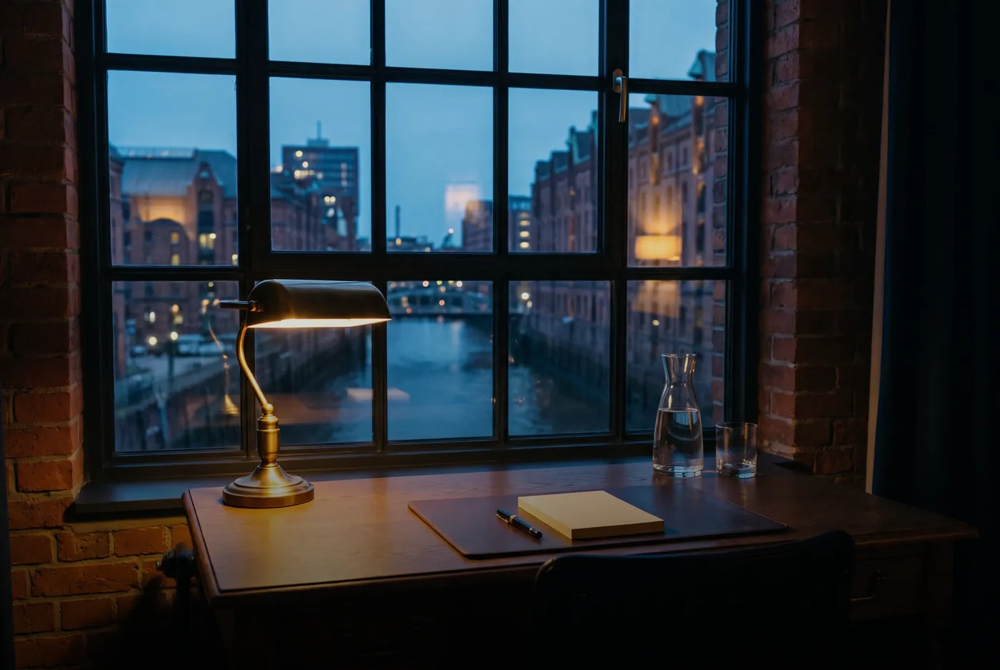
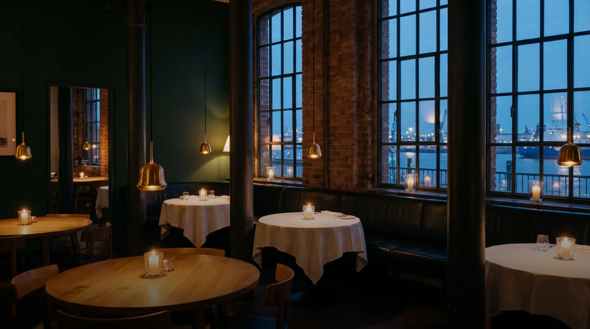
 Anna LlorensCo-Founder · Front Office
Anna LlorensCo-Founder · Front Office13Jahre Hotellerie
- 2024Grand Beau-Rivage
- 2021Carlton St. Moritz
- 2017Schloss Bensberg
- 2013Malerwinkel Hotel
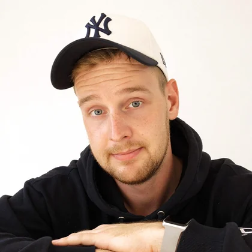
Robert ReffCo-Founder · Back Office12Jahre Gastronomie
- 2024New York Bagel Bar
- 2023Stadtsalat
- 2021L'Osteria
- 2020Winzerhood
- 2017Aspria
- 2014Event-Hospitality
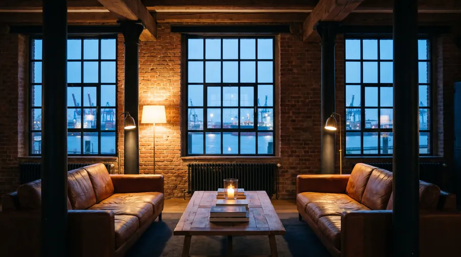

AnnaLlorens
Co-Founder
Front Office
Kommunikation, Vertrieb, Marke und Strategie
Anna Llorens hat ihr Handwerk dort gelernt, wo der Gast ankommt: an der Rezeption. Über Schloss Bensberg und das Carlton in St. Moritz führte ihr Weg bis zur stellvertretenden Direktorin des Grand Beau-Rivage in Interlaken. Sie weiss, was ein Gast fragt, bevor er bucht, und wie ein Haus seine Zimmer zum richtigen Preis verkauft. Als Co-Founder von Tasty Studios ist sie Ihre erste Ansprechpartnerin: im Gespräch, im Angebot und während des ganzen Projekts.
- Bei uns
- Kommunikation · Vertrieb · Marketing · Markenaufbau · Strategie · Analyse
- Häuser
- Grand Beau-Rivage Interlaken · Carlton Hotel St. Moritz · Althoff Grandhotel Schloss Bensberg
- Zuletzt
- Stellvertretende Direktorin im Grand Beau-Rivage Interlaken
- Zuhause in
- Front Office, Reservierung, Revenue Management, Event Sales und dem Zusammenspiel dazwischen
- Gelernt
- B.A. Hotellerie und Tourismus · Revenue Manager, Deutsche Hotelakademie · Revenue Management, Cornell University

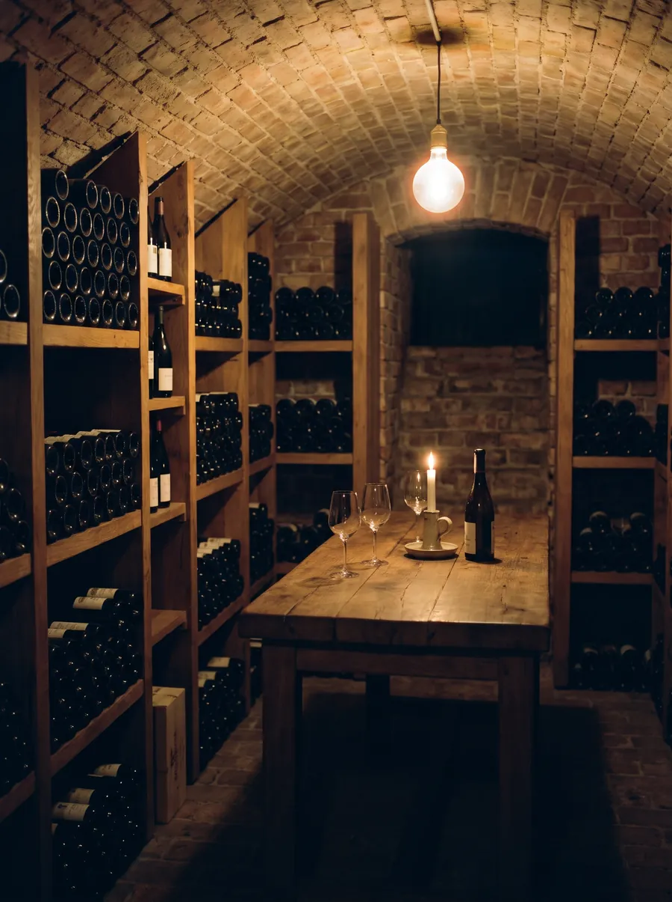
RobertReff
Co-Founder
Back Office
Gestaltung, Websites, Werkzeuge und KI
Robert Reff kommt aus der Gastronomie und hat sie von innen geführt: Service, Einkauf, Kalkulation, Dienstpläne, Zahlen. Als General Manager verantwortete er einen Standort mit über vier Millionen Euro Umsatz und rund 120 Mitarbeitenden, danach baute er für eine wachsende Kette die Systeme hinter dem Betrieb auf. Als Co-Founder von Tasty Studios entwirft er die Websites, schreibt den Code und baut die Werkzeuge und KI-Systeme, mit denen ein Haus im Hintergrund leichter läuft.
- Bei uns
- Gestaltung · Websites · Werkzeuge · KI-Systeme · Struktur im Hintergrund
- Betriebe
- Stadtsalat · L’Osteria · Winzerhood · New York Bagel Bar · Aspria
- Zuletzt
- Expansion Manager bei New York Bagel Bar
- Geführt
- Rund 120 Mitarbeitende und fünf Store Manager an einem Standort
- Seit 2025
- Co-Founder von Tasty Studios, gemeinsam mit Anna Llorens
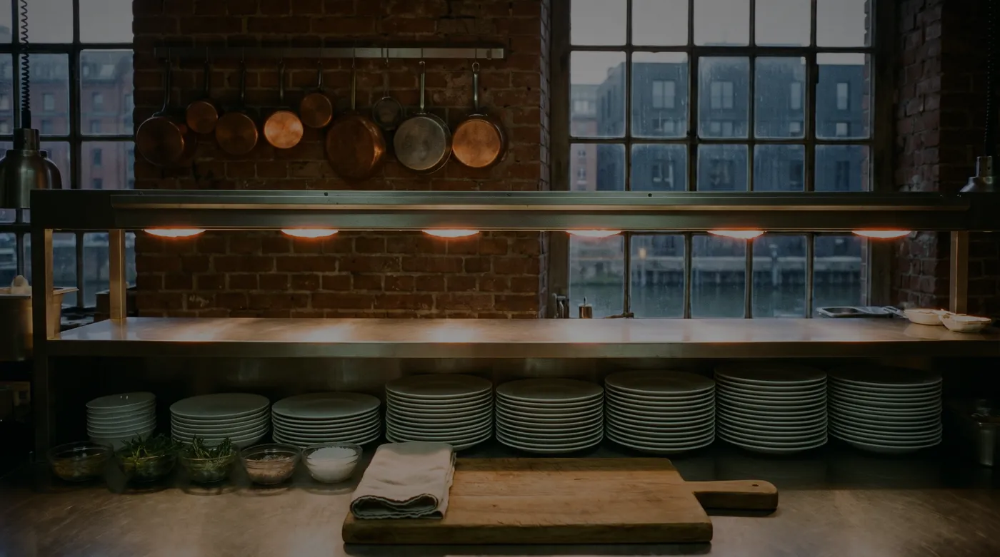
Was vorne beim Gast ankommt,entsteht dahinter.
Was Sie von uns bekommen
Alles, was Ihr Hausdigital braucht.
Von der ersten Skizze bis lange nach dem Start. Alles kommt von uns beiden, nichts wird weitergegeben, und am Ende gehört alles Ihrem Haus.
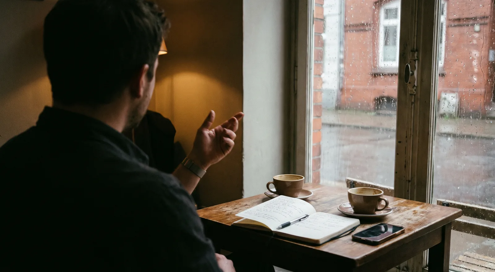
Strategie
Wir sehen uns Ihr Haus an, wie ein Gast es sieht.
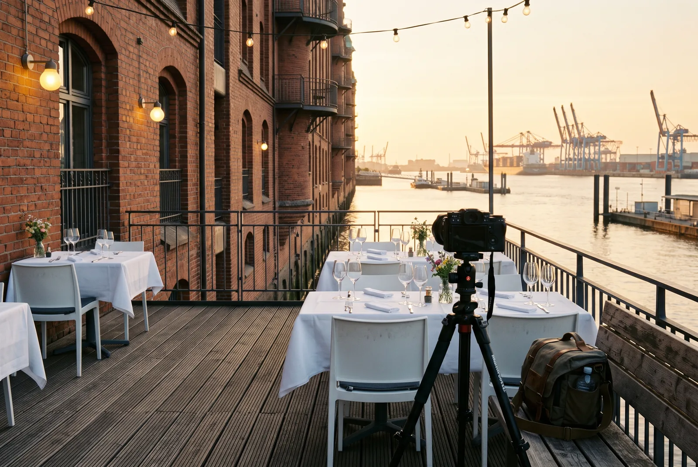
Marke
Ein Markenbuch mit den Fotos, Farben und Schriften Ihres Hauses.
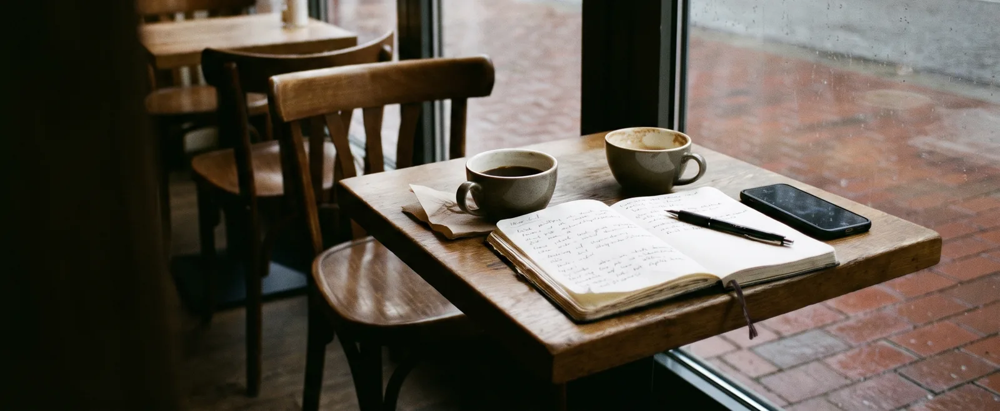
Gestaltung
Entworfen um den Charakter Ihres Hauses, ohne Vorlage.
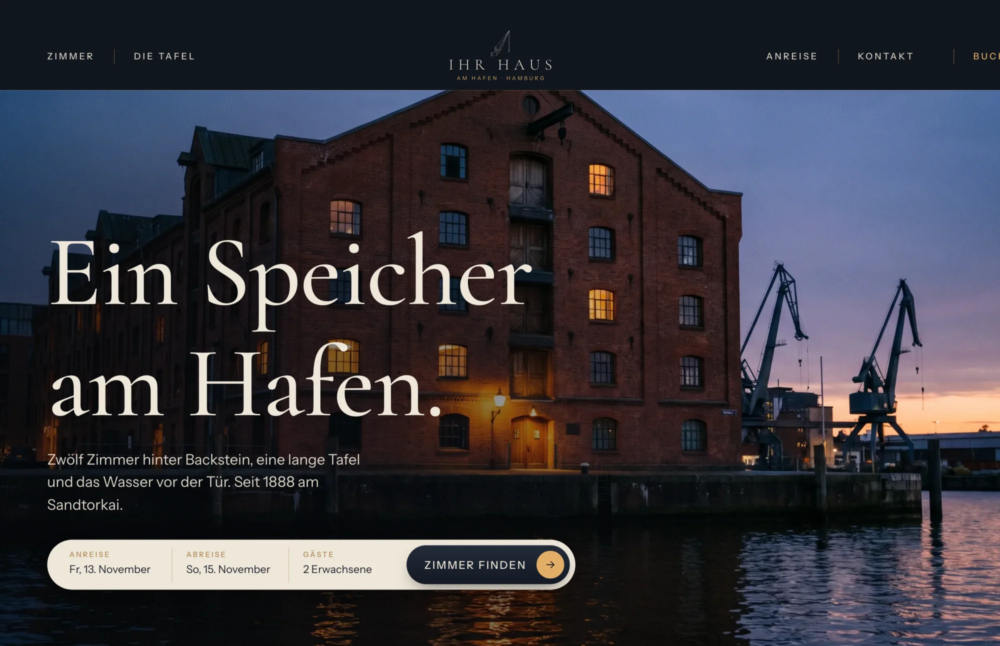
Website
Alle Seiten, jedes Gerät, mehrsprachig, mit Ihrer Buchung verbunden.
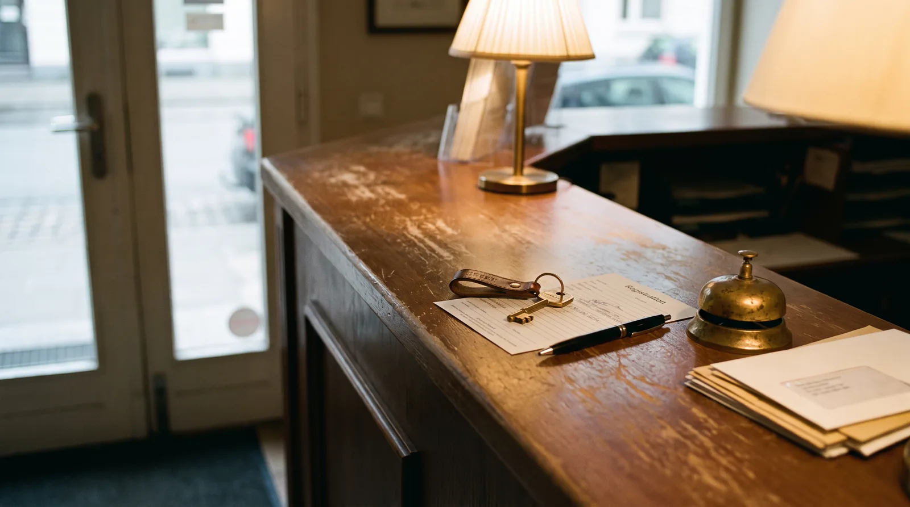
Werkzeuge und KI
Kontrollpanel, Karten, Gästemappe und eine Rezeption im Chat. Ihr Team ändert alles selbst.
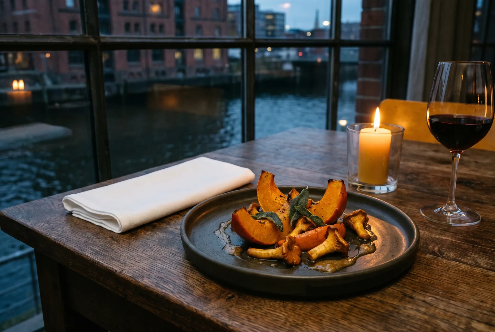
Betreuung
Pflege, Sicherung, neue Saisons und zwei Ansprechpartner, die Ihr Haus kennen.
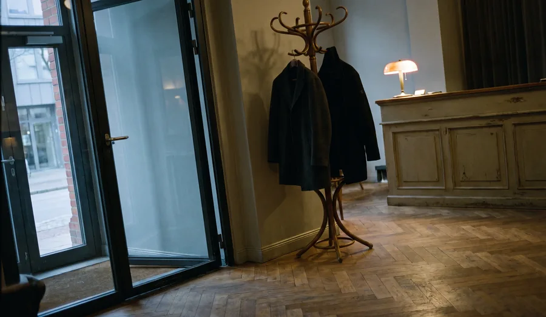
Ein erstes Gespräch
Lernen Sieuns kennen.
Ein erstes Gespräch mit Anna und Robert. Wir sehen uns Ihr Haus an, wie ein Gast es sieht, und sagen Ihnen, was eine Website dort leisten kann.